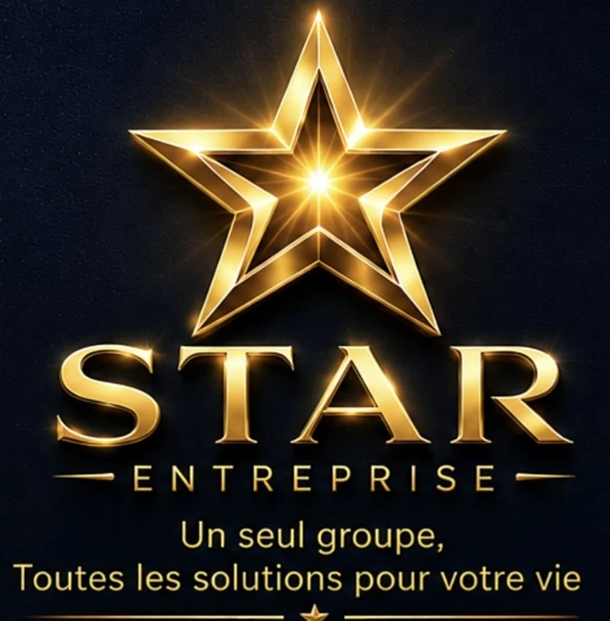

Passeport SûrSUIVI · CONTRÔLE · TRANSPARENCE
Scanne-moi !
C’est gratuit !
et prépare ta demande de passeport depuis ton téléphone
★Pré-enregistre-toi avant de te déplacer
★Suis ton dossier de A à Z
★Sois reçu dans l’ordre, avec ton numéro
Scanne-moiavec l’appareil photo de ton téléphone
Le but de l’application : que chaque demande de passeport soit suivie de A à Z, que chacun soit reçu dans l’ordre et que les fraudes soient repérées. L’application est gratuite ; le tarif du passeport reste celui fixé par l’État.

STAR ENTREPRISE · Brazzaville, Congo
Version de démonstration · données fictives